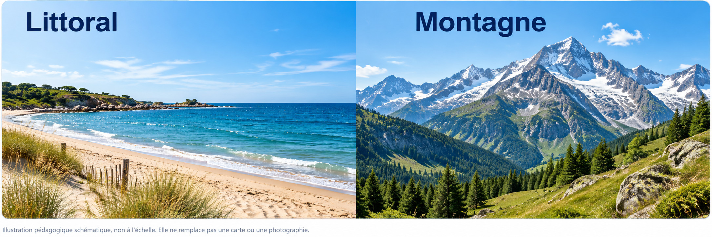

Décrire différentes façons d’habiter un littoral ou la montagne
Le relief, le climat, les activités et les déplacements influencent la façon dont les habitants vivent.
Vivre près de la mer ou en montagne

Visuel pédagogique photoréaliste composé pour comparer les paysages. Ce n’est pas une photographie documentaire.
1. Habiter le littoral
Sur le littoral, on rencontre des ports, des plages, des logements et des commerces. Les habitants peuvent travailler dans la pêche, les services ou le tourisme.
2. Habiter la montagne
En montagne, les villages se trouvent souvent dans les vallées ou sur les versants accessibles. Les routes doivent tenir compte des pentes.
3. Comparer les deux espaces
Les activités et les aménagements ne sont pas les mêmes partout : port et promenade sur le littoral, route en lacets et remontées mécaniques dans certaines montagnes.
Je retiens
Sur le littoral comme en montagne, les habitants adaptent leurs logements, leurs déplacements et leurs activités au milieu.